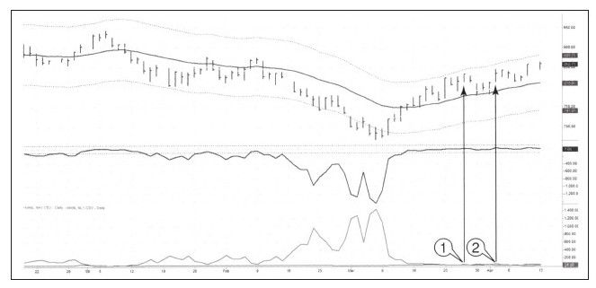

图10-2反映出的信息准确无误地告诉交易者不必痛苦，它给出平空信号，并让大家开始准备买入股票列表。

技术交易信号在不同的时间框架图上同时出现的情况很少，职业交易者有能力处理这个问题，但新手恐怕连交易信号都识别不出来，而执著的交易者一直在等待完美信号的出现，但他们往往看着列车驶出车站。
举个恰当的例子：看看2009年3月市场低点时NH-NL指标的行为，从周线图中可以清晰地看到市场的底部信号，日线图相对平静，此时市场又创出新低，日线NH-NL指标跟随价格创出新低，没有迹象表明是背离。在最后一跌中，周线图NH-NL指标出现令人惊愕的底背离（见图10-2）。3月份的日线图却什么信号也没有，此时我们该怎么办？
因为周线图的重要性强于日线图，所以从长期图表中走出来的信号比从短期图表中走出来的信号更重要。理想状况下，两者会走出同样的走势，但现实中往往不是这样，在这种情况下你必须做出选择。三重过滤网系统告诉我们分析时以长期图表开始，并在那里做好战略决策，而后再转向日线图表以做出战术时机选择。
4月份NH-NL指标终于出现了像周线图一样的模式，此时新高指标的数值涨到新低指标之上。因为日线NH-NL指标非常敏感，所以我要等待二次金叉时才会把它作为一次买入信号。Spike集团的史蒂芬·莫里斯笑称这是“双螺旋”或“双亚历克斯式”。